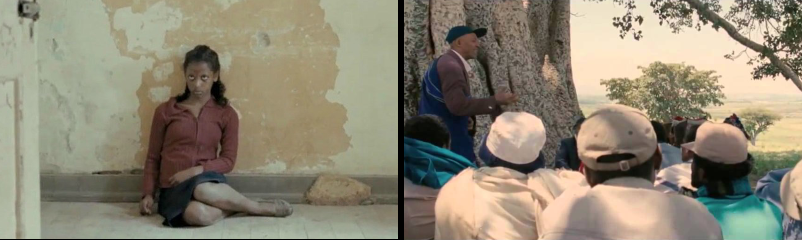

Difret
A Film Review

‘Difret’ is a docudrama that tells a straightforward and
unpretentious story of a 14 year old Ethiopean girl who faced
murder charges for killing her abductor and rapist. The story
of her trial and vindication made international news in the
mid 1990s.
At that time it was estimated that 30% of
Ethiopian marriages began with abduction and rape. In this
film, as in real life, the abducted girl was defended by an
organization established to provide pro bono services for
abused women—the Ethiopian Women Lawyers Association.
Wife-beating and forced marriages were, and likely still are,
accepted in rural Ethiopia. Until the trial depicted
in this film, the legal system turned a blind eye to such
things. To open the eyes of the legal system was an
audacious act. The film clearly shows the kinds of obstacles
the EWLA's lawyers faced. ‘Difret’ which means ‘audacity’ in
Amharic is a fitting title for this film.
The EWLA was founded by Meeza Ashenafi who seems to be very
well placed in Ethiopean society. For example, while still a
young woman she served for three years as a judge on the
Federal Supreme Court of Ethiopia. On the other hand the film
shows her living a middle class life and spending her time
working with the poor.
This was director and screenwriter Zeresenay Menari's
first full length feature film and there are glitches.
But much was done right as well.
Choosing Meeza Ashenafi as the main protagonist allowed Menari
to depict of all levels of Ethiopean society. A film with
Hollywood polish would be unlikely to depict the rural poor
as well as this one does. We seldom get to see rural poor in
feature films and in Ethiopia that is where the wife stealing takes place.
For me the most galling defect in the film is that it sets
up all the difficulties Asenafi faces and then skips to their
resolution without showing how the resolution was achieved.
The effect of this omission may be to inflate Asenafi's role
over what actually happened. One wonders because the movie was
temporarily banned in Ethiopia because of a complaint that it
inflates Ashenafi's role. The ban was lifted when the issue
was settled out of court.
Currently
‘Difret’ is only available for streaming through Kanopy, a
free service associated with your local library. There is
however another way to see the same events on film.
Fourteen years before this film was made, and not
long after the courtroom verdict, the BBC covered the story by
sponsoring a documentary titled ‘School Girl Killer’.
Ashenafi's role in the documentary is not so large as in the
docudrama. You can see the documentary on
Youtube.